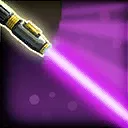
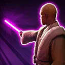

Mace windu
Aggressive Jedi tank with devastating damage if left unchecked
Aggressive Jedi tank with devastating damage if left unchecked

Deal Special damage to target enemy and inflict Ability Block for 1 turn. This attack deals bonus damage equal to 5% of Mace's Max Health. If Mace is above 50% Health, he gains 15% Turn Meter. If Mace is below 50% Health, he recovers Health equal to 100% of the damage dealt.
Deal Special damage to target enemy and dispel all buffs on them. If target enemy had Shatterpoint, Stun them for 1 turn and remove 50% Turn Meter, then Mace gains 50% Turn Meter.

Deal Special damage to target enemy and call target other ally to assist. If target enemy had Shatterpoint and target ally is Galactic Republic, swap Turn Meter with target ally. If target enemy had Shatterpoint and target ally is Jedi, Mace gains 2 stacks of Resilient Defense (max 8) for the rest of the encounter. Both Mace and target ally recover 30% Protection.
Jedi allies gain 20% Max Health and Offense, and recover 10% of their Health when they score a critical hit.
Mace gains 30% Max Health. At the end of each turn, if another ally with Protection was damaged by an attack that turn, Mace gains 3 stacks of Resilient Defense (max 8) for the rest of the encounter if he has not gained Resilient Defense this way since his last turn. While Mace has Resilient Defense, he has +10% Offense per stack and 100% counter chance. Whenever Mace gains Taunt, he dispels it and gains 2 stacks of Resilient Defense.
Resilient Defense: Enemies will target this unit; lose one stack when damaged by an attack
Mace gains 30% Offense. At the start of Mace's turn, dispel Stealth on all enemies and a random enemy (excluding raid bosses and Galactic Legends) is inflicted with Speed Down for 1 turn and Shatterpoint, which can't be evaded or resisted. Shatterpoint is dispelled at the end of each ally's turn. When an ally damages an enemy with Shatterpoint, all allies recover 10% Protection, and all Galactic Republic Jedi allies gain Foresight for 1 turn.
Shatterpoint: Receiving damage dispels Shatterpoint and reduces Defense, Max Health, and Offense by 10% for the rest of the encounter; enemies can ignore Taunt to target this unit
Omicron boost : While in Territory Wars: At the start of each other Light Side ally's turn, a random enemy (excluding Galactic Legends) is inflicted with Speed Down for 1 turn and Shatterpoint, which can't be evaded or resisted. When an ally damages an enemy with Shatterpoint, all allies gain 5% Turn Meter.